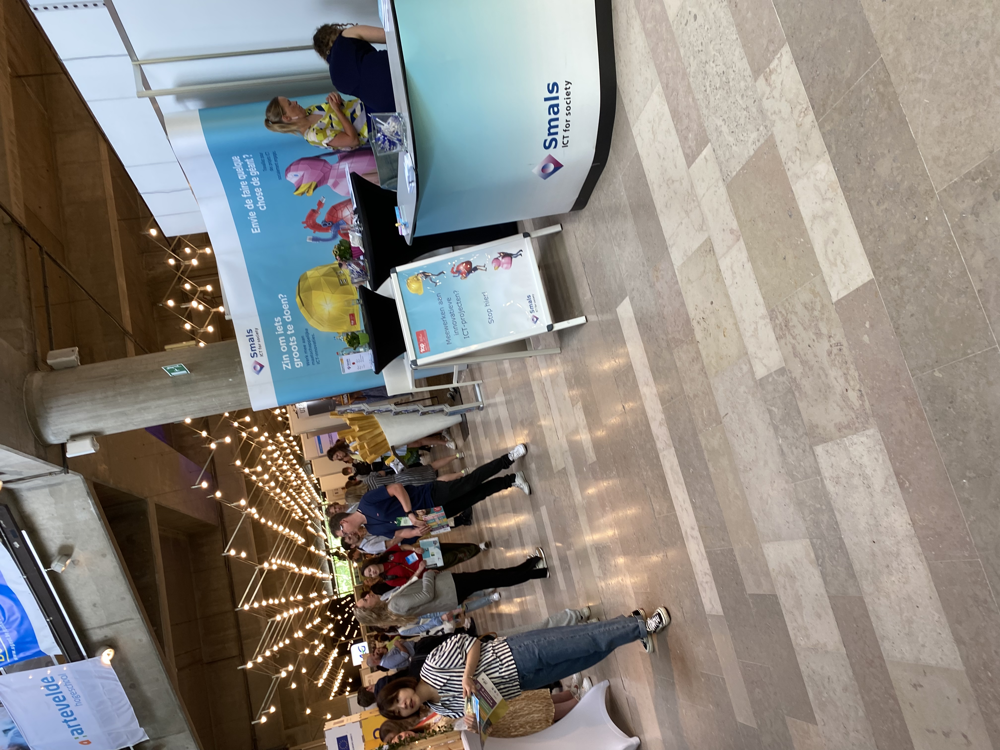
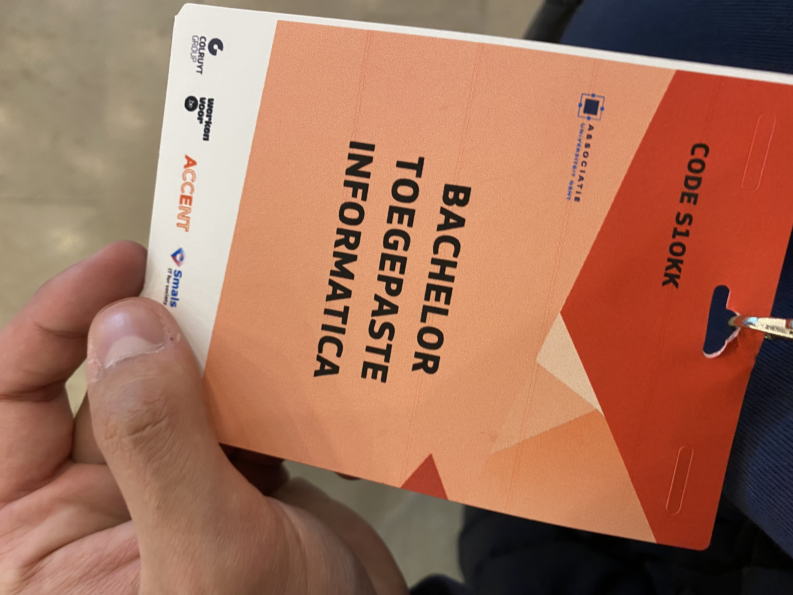

Op maandag 16 mei 2022 werd er een afstudeerbeurs georganiseerd in het ICC Gent. Dit is een jaarlijks evenement, dit jaar was er zowel een online infosessie alsook interactieve workshops en infosessies. De online versie was grotendeels om uw CV te laten controleren. Ik ging naar dit evenement vooral om naar zaal 2 - Hubert Van Eyck te gaan. De eerste infosessie was om 13u.
Ik koos voor Zaal 2 omdat ik het meest geïnteresseerd was in de uitleg over lonen en werken in het buitenland.
De eerste infosessie werd gegeven door Annemie Van Gucht. Hierbij werd er meer uitleg gegeven over wat voor loon je kan verwachten als afgestudeerde. Er werd meer uitleg gegeven over wat er verwacht wordt van een net afgestudeerde student en wat je waard bent. Wat voor extralegale voordelen er bestaan en uit wat de loonstructuur bestaat.
Daarna ben ik direct naar de workshop over Europass gegaan, de spreker was Eva Van de Gaer. Deze workshop was bedoelt om te demonstreren wat je kan doen met Europass en wat het inhoudt. Ik heb geen profiel ter plaatse kunnen maken, maar ik zal dit doen wanneer ik denk om in het buitenland te werken. Europass is een handig platform die uw zoektocht naar een job in Europa vergemakkelijkt. Op dit platform kan je ook soliciteren op jobs.
De laatste infosessie die ik bezocht ging over werken in het buitenland, dit werd gegeven door Jill Delombaerde van de VDAB. Hierbij werd het proces tot het solliciteren voor een job in het buiteland uitgestippelt. In de infosessie hiervoor werd de Europass toegelicht. In deze infosessie kregen we praktische uitleg en tips over werken in het buitenland. Wat er je te wachten staat in het buitenland en hoe je het moet aanpakken.
Ik raad aan alle afgestudeerden om dit evenement te bewonen als je onzeker bent over bepaalde dingen en jezelf wilt informeren. Bij het stellen van vragen krijg je altijd een uitgegreide en voldoende uitleg om verder te kunnen. Het enige moeilijke was om te beslissen naar welke infosessie of workshop ik wou gaan. Omdat de infosessie elkaar overlappen, moet er een keuze gemaakt worden met wat je belangrijker vindt.